Senior Program Manager, Product & Design
Lollypop Design Studio
I build the systems that let design organisations deliver predictably, at scale, without friction, through change, with precision, in sync and with quality.
11+ years leading cross-functional execution across digital product delivery, design & research operations, broadcast media and GTM execution.
Clients I've managed
- JK Cement
- BCG
- Pepsi
- boAt
- SonyLIV
- ACT Fibernet
- Axis Bank
- Reliance
- Cultfit
- IndiaMART
- GreenSM
- Sucafina
- Praan Health
- Tattva
- MoneyPlanned
- RF Poker
- KVB
- Jaro Education
- BBQ Nation
International design awards for projects I led through delivery.
Selected work
Products & experiences I've delivered
-
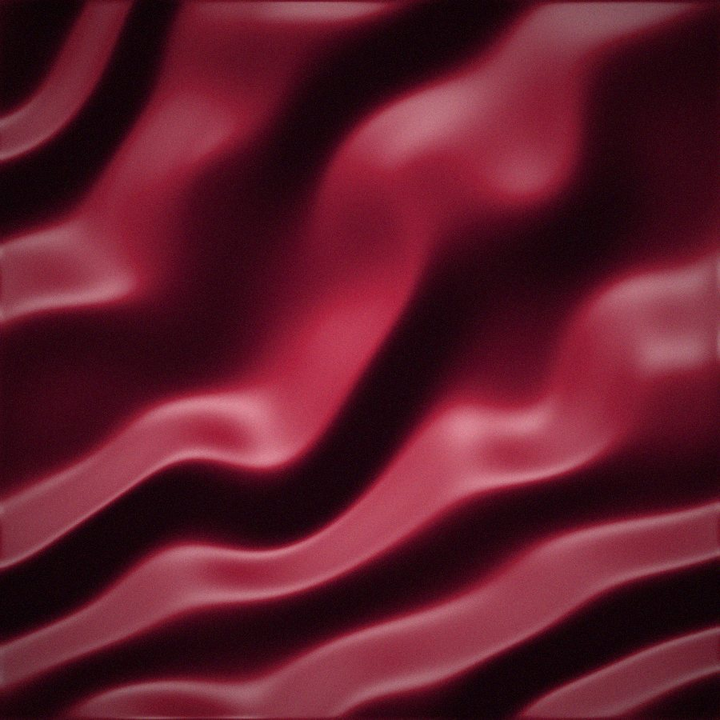
ACT Fibernet Leading delivery of a more accessible broadband management experience. Explore on the App Store -
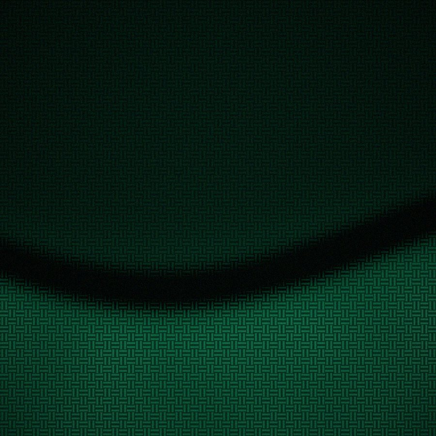
RF Poker Bringing competitive poker to a polished digital experience. Explore on the App Store -
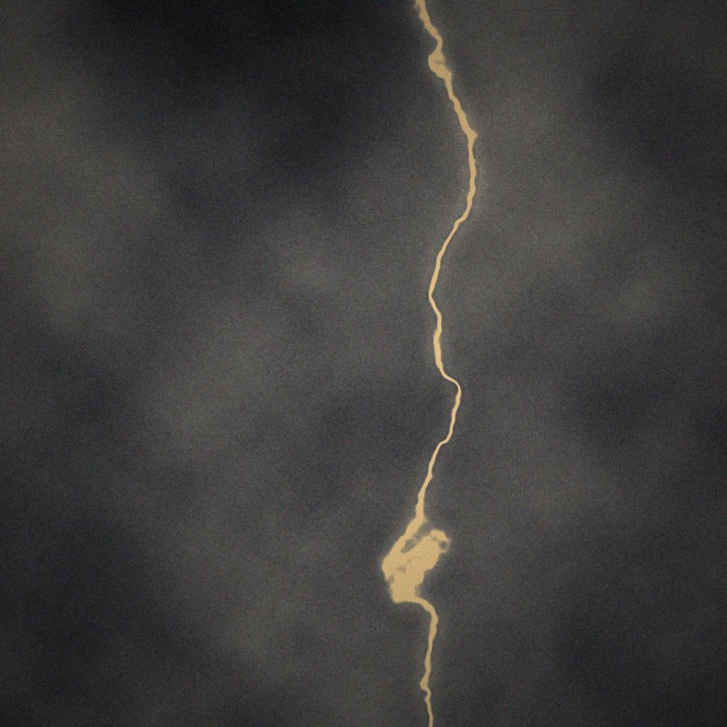
JK Cements Orchestrating priorities and delivery across a seven-app enterprise transformation. Explore apps on Google Play -
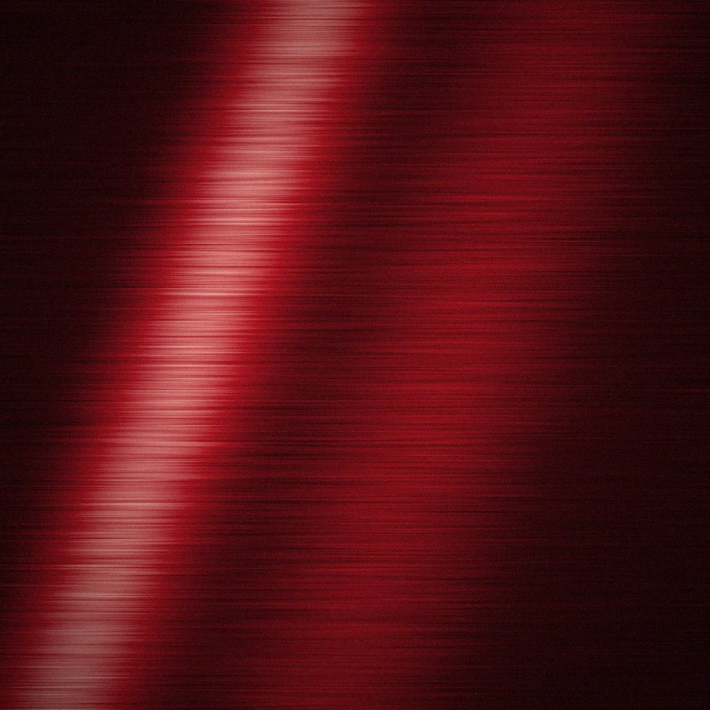
boAt Lifestyle A digital commerce experience for a leading consumer technology brand. Visit boAt -
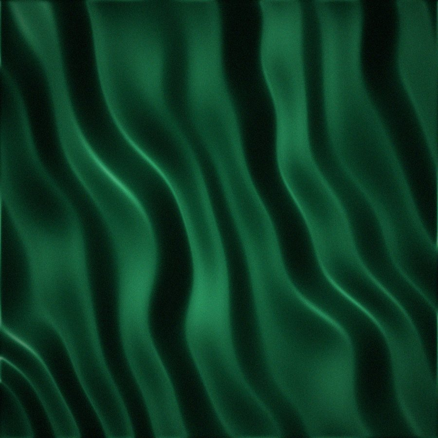
GreenSM Coordinating delivery of a multilingual digital experience for electric mobility. Explore on the App Store - KVB Mobile Banking Bringing everyday banking services into a digital-first experience. Find on Google Play
-
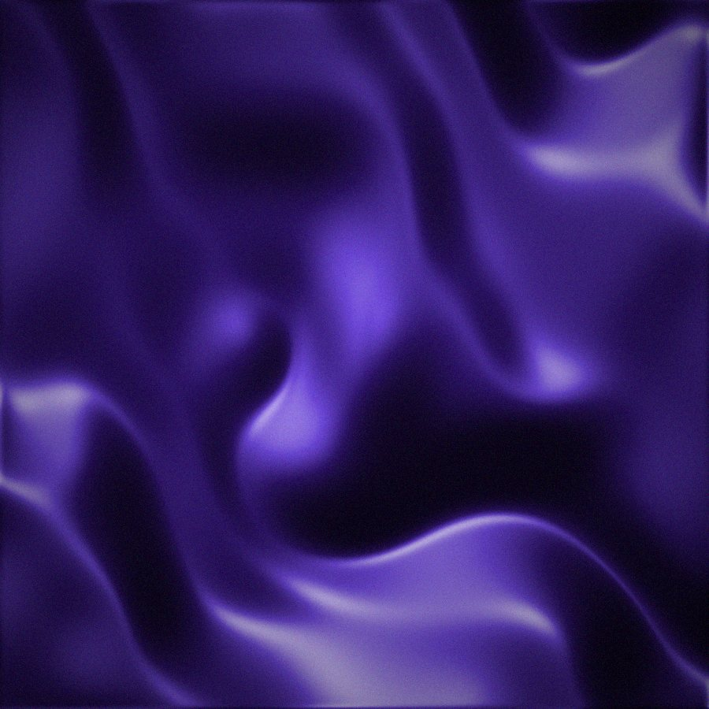
MoneyPlanned Making personal finance easier to understand and manage. Explore on the App Store -
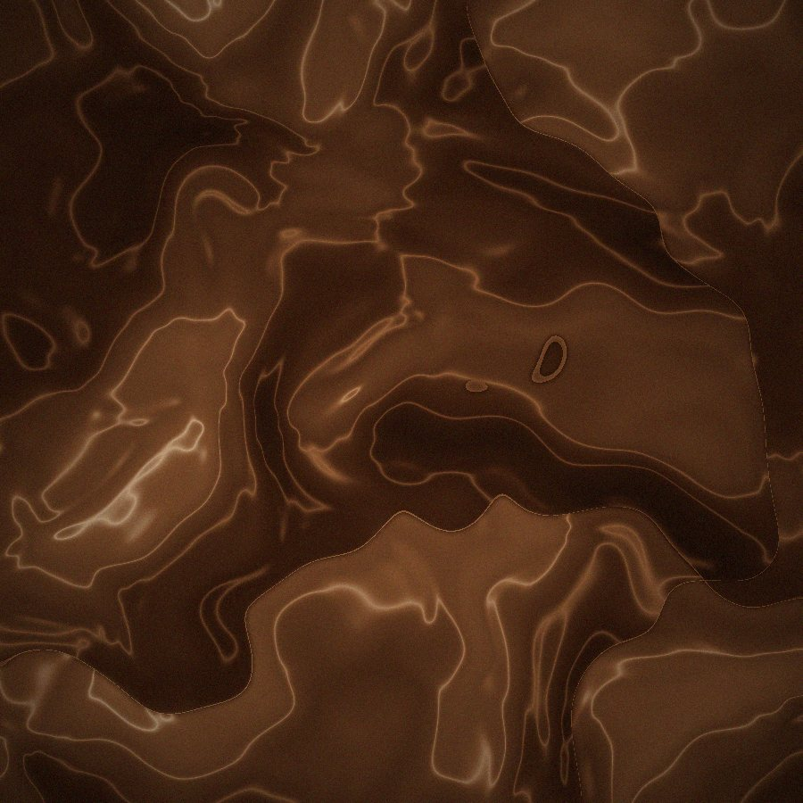
Sucafina Connecting a global coffee business through its digital experience. Visit Sucafina -
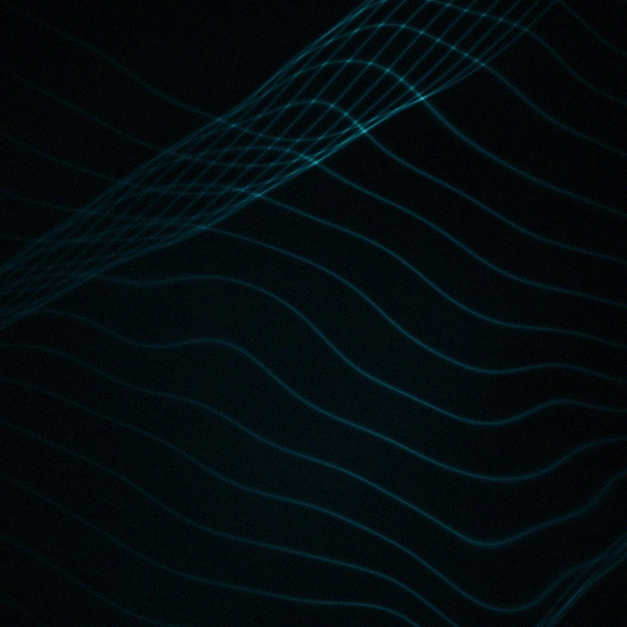
TradingLeagues Making market participation more engaging through a digital platform. Explore the platform
My role at Lollypop
I lead program management for a global design studio.
Lollypop Design Studio is a global UX and research agency. I lead program management, connecting business demand, design capacity and delivery execution across a portfolio of client engagements.
What I lead
- 11
- Project Managers led
- 35+
- Concurrent engagements
The studio I run delivery across
- 250+
- Product designers
- 7
- Delivery centres
How I lead, from studio to engagement
01 · Organisation Portfolio operations & commercial governance
- Align demand with capacityConnect pipeline demand, resource availability and skill mix to inform staffing and prioritisation.
- Make portfolio health visibleSurface delivery health, utilisation, risks and trade-offs through portfolio reporting that enables faster leadership decisions.
- Connect delivery with business operationsCoordinate estimates, scoping, commercial changes and cross-functional workflows with Finance and other business stakeholders.
02 · Team People, capacity & operating discipline
- Develop Project ManagersCoach 11 PMs on estimation, planning, scope management and stakeholder communication.
- Balance capacity and prioritiesAlign resource allocation and team capabilities with competing demands and delivery commitments.
- Establish clear accountabilityStandardise ways of working, governance cadences and escalation paths across the PM function.
03 · Engagement Scope, alignment & delivery assurance
- Turn business needs into delivery plansTranslate requirements into clear scope, estimates, milestones and delivery expectations.
- Align cross-functional teamsBring design, product, engineering and business stakeholders together around feasibility, dependencies and priorities.
- Intervene before delivery slipsSurface risks early, manage scope changes and lead recovery when engagements go off track.
Case studies
Program mandates I've led, end to end
-
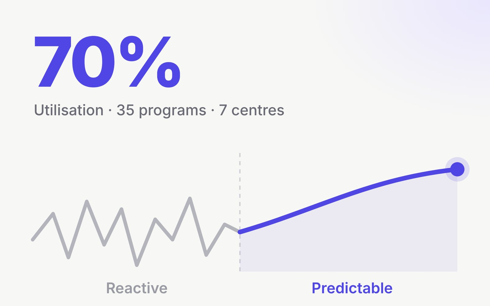
Operationalising a 250+ designer studio →
Took a fast-growing design organisation from reactive to predictable.
-
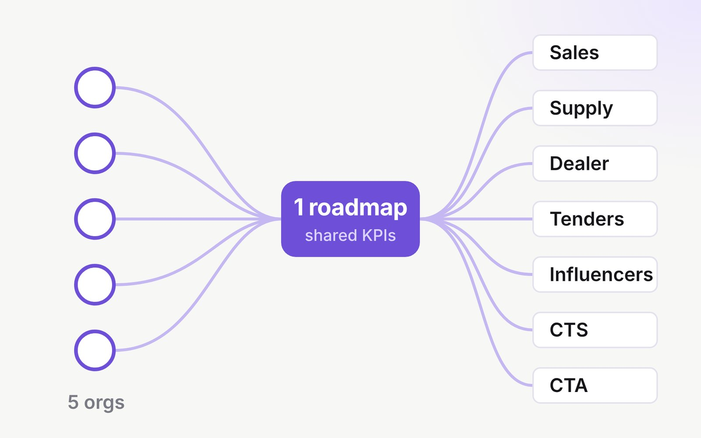
Orchestrating a 7-app enterprise rebuild →
Five organisations, one roadmap, for a national cement brand.
-
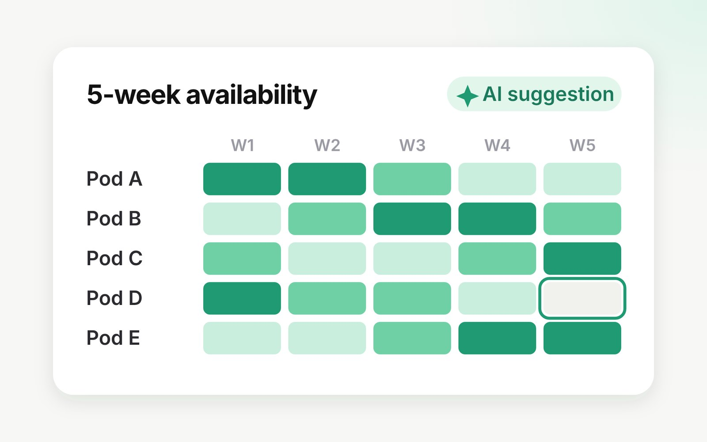
From ad-hoc requests to CapacityOS →
One intake door, then an AI-assisted platform built on top of it.
-
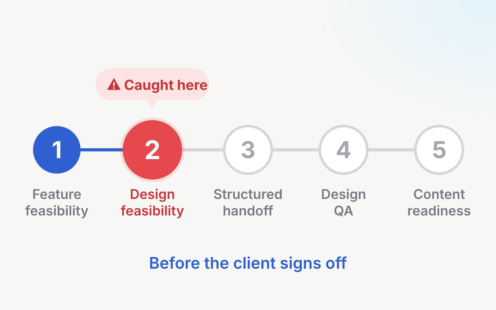
Making design buildable →
Five mandatory gates that catch feasibility problems before the client signs off.
How I solve problems
Problems I've solved, and how
Diagnose the root problemInvolve stakeholdersDecide on evidencePilot before rollout
- Design and engineering assumed different platforms Instead of 'Can we build this?' the program was now asking 'What's the most feasible path to the business outcome?' Read how
- An out-of-scope app was leaking value Not fixed scopes, but outcome systems. Read how
- Twelve designers needed, none free Every staffing decision is a business decision. Read how
- Staffing requests arrived from everywhere From reactive allocation to planned allocation. Read how
- Feasibility was checked after design sign-off Handoff is not complete when Design shares files. Handoff is complete when Engineering accepts the handoff. Read how
- Context was lost between presales and delivery The organization's structure finally aligned with how work actually flowed. Read how
- Every project started from a blank canvas A repository without governance becomes clutter. Read how
- 35+ projects, no decision rhythm Governance became a tool for fast decisions, not a control mechanism. Read how
- Every escalation felt like a crisis From escalation-as-failure to escalation-as-signal. Read how
About
I build the conditions for good teams to do their best work.
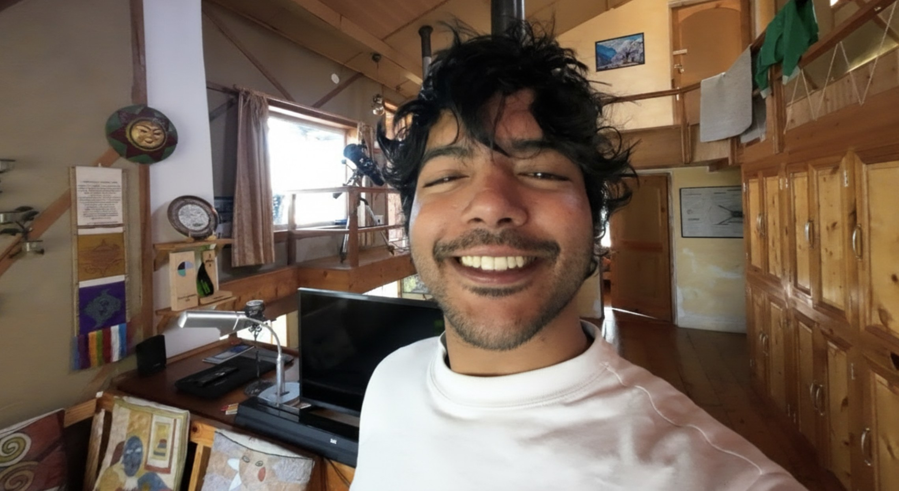
My career has taken me from ad sales in Goa through SaaS, marketing operations and broadcast media to digital product delivery. I joined Lollypop Design Studio in 2022, where I found the intersection of design, people, business and operations that now defines my work.
At Lollypop, I progressed from Project Manager to leading the program management function. Along the way, my focus expanded from delivering individual engagements to improving how teams plan, collaborate, manage capacity and deliver across a portfolio.
The scale changed. The principle stayed the same: give people clarity, remove unnecessary friction and build systems that help good work happen.
- Ad salesGoa
- SaaS and marketing operationsOnboarding, campaigns
- Broadcast media24×7 content operation
- Lollypop Design Studio2022 to now: Project Manager to Program Lead
What collaborators say
In their words
Add a one- or two-sentence quote here about a specific result or what it was like to work with you.
Add a one- or two-sentence quote here about a specific result or what it was like to work with you.
Add a one- or two-sentence quote here about a specific result or what it was like to work with you.
Field notes
Thought pieces from running design programs
- Don’t just drive by the rearview mirror: 12 leading indicators for design delivery
- How I actually define project success as a design program manager
- 28 UX operational metrics that changed how I run design programs
- 5 mental models behind strong program leadership
- Agency POV: how perception around iterations affects negotiations, margins and team pressure
- Fixed-bid rewards discipline. It punishes ambiguity.
Outside work
I free-dive, and I film people, places and moments that intrigue me.
The same instincts carry into my work: noticing what others miss, staying calm under pressure, and paying attention to the human in the frame.
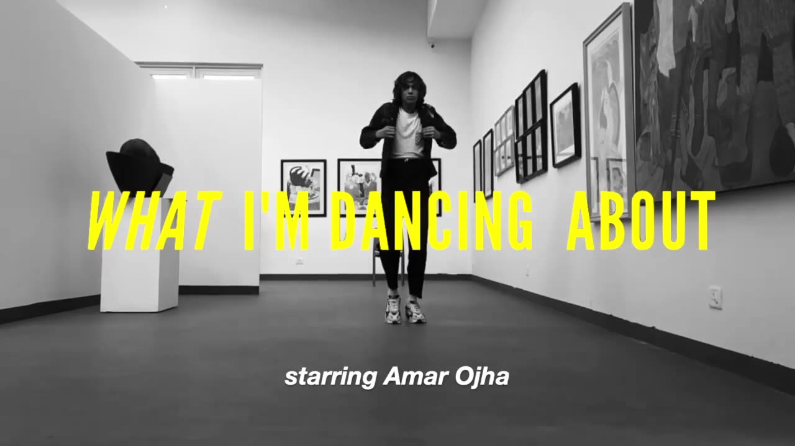
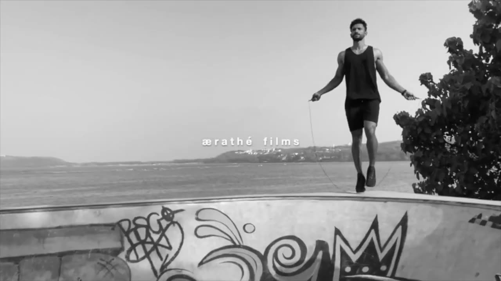
Contact